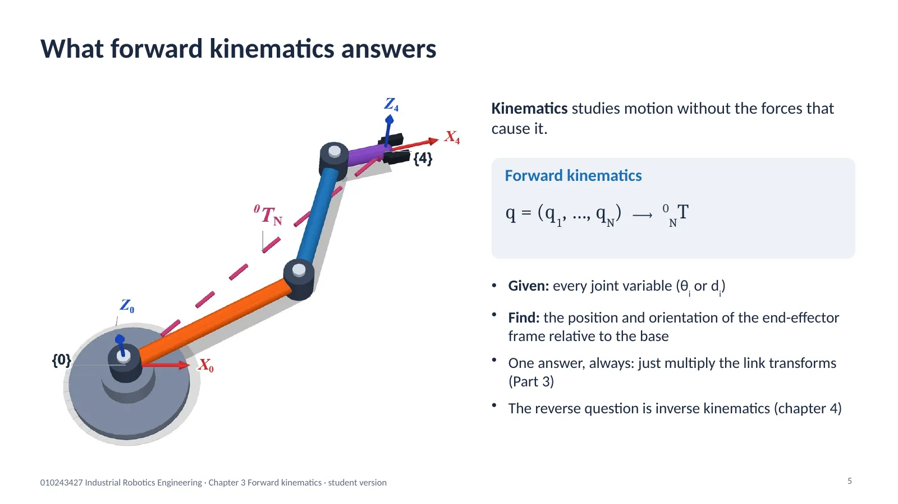
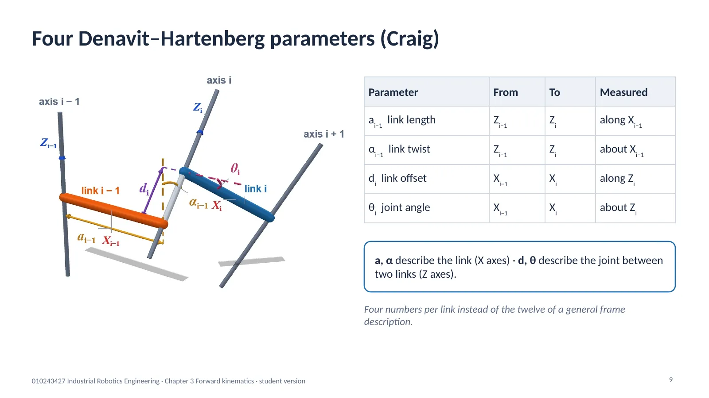
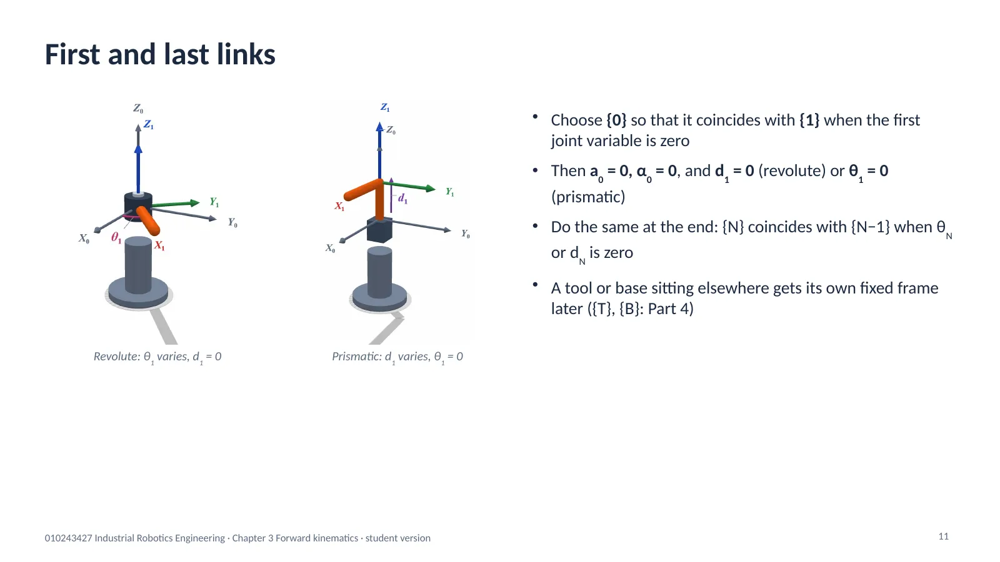
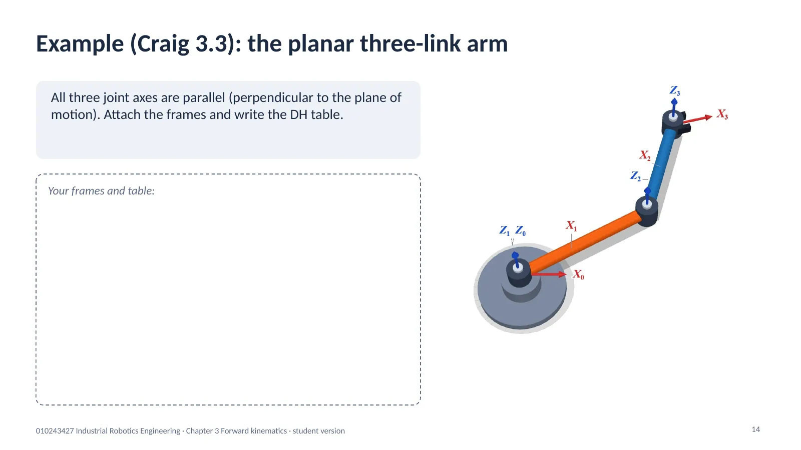

จลนศาสตร์ไปข้างหน้า: รู้ตัวแปรข้อต่อทุกตัว หาเฟรมของปลายแขนเทียบฐาน วิธีของ Denavit–Hartenberg (DH) บอกความสัมพันธ์ระหว่างก้านต่อที่อยู่ติดกันด้วยตัวเลขเพียง สี่ตัว แล้วติดเฟรมให้ทุกก้านตามกติกาเดียวกัน หน้านี้ครอบคลุมสไลด์หน้า 5–14 (Craig 3.1–3.4) มี เครื่องมือ 1 ชิ้น (A) และ 3 โจทย์
Forward kinematics: given every joint variable, find the frame of the end-effector relative to the base. The Denavit–Hartenberg (DH) method describes two neighbouring links with only four numbers and attaches a frame to every link by one rule. This page covers slides pp. 5–14 (Craig 3.1–3.4), with one tool (A) and 3 problems.

แท่งสีเทายาวคือแกนข้อต่อ i−1, i, i+1 ซึ่งเป็นเส้นเบ้ในปริภูมิ ก้านต่อ (สีส้ม สีน้ำเงิน) วางตามเส้นตั้งฉากร่วมของแกนที่อยู่ติดกัน เลื่อน ai−1 แล้วดูว่าแกน i ขยับออก เลื่อน αi−1 แล้วแกน i บิดรอบ Xi−1 เลื่อน di แล้วก้าน i เลื่อนตามแกน i และเลื่อน θi แล้วก้าน i หมุนรอบแกน i
The long grey bars are joint axes i−1, i, i+1, skew lines in space. The links (orange, blue) lie along the common perpendiculars of neighbouring axes. Move ai−1 and axis i moves away; αi−1 twists axis i about Xi−1; di slides link i along axis i; θi turns link i about axis i.

